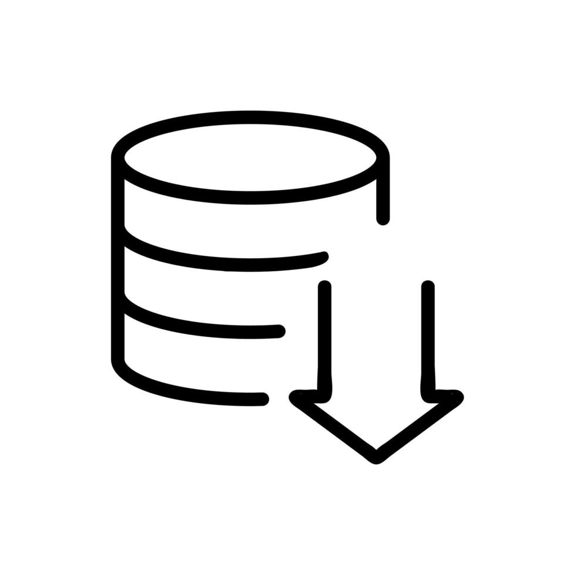
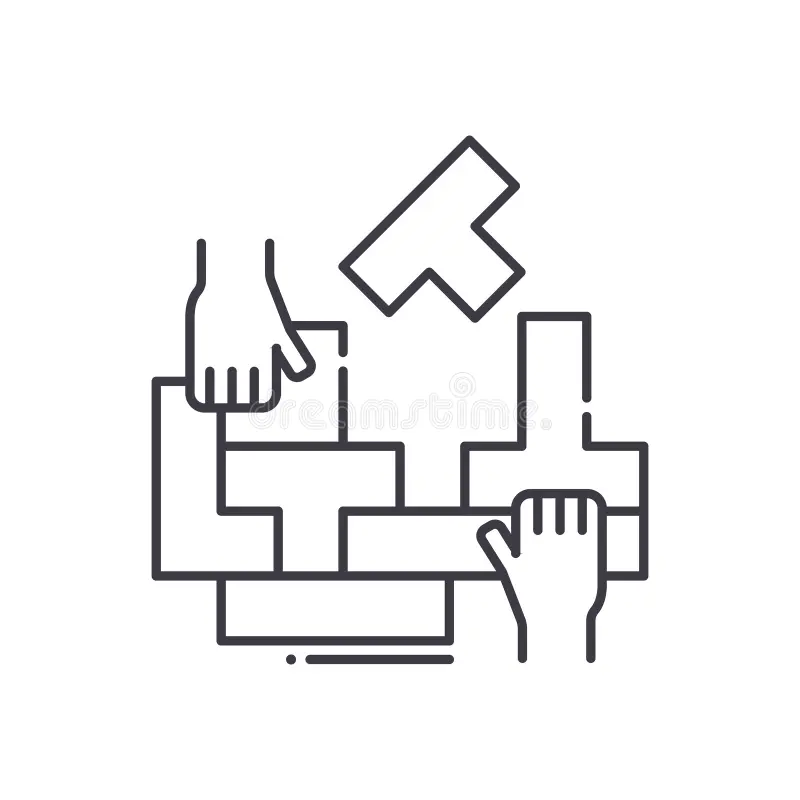

Tecnologia e interesses
Programação WEB
Criação de Sites e aplicações WEB com HTML, CSS e JavaScript.

Bando de Dados
Armazenar e gerenciar informações de forma estruturada.

Maker
Construir, moldar e fabricar dispositivos para dia-a-dia
Automação residencial
Automação de tarefas ou ações de forma independente sem a necessidade de executá-las manualmente.
- Alexa
- GoogleHome
- HomeAssistant